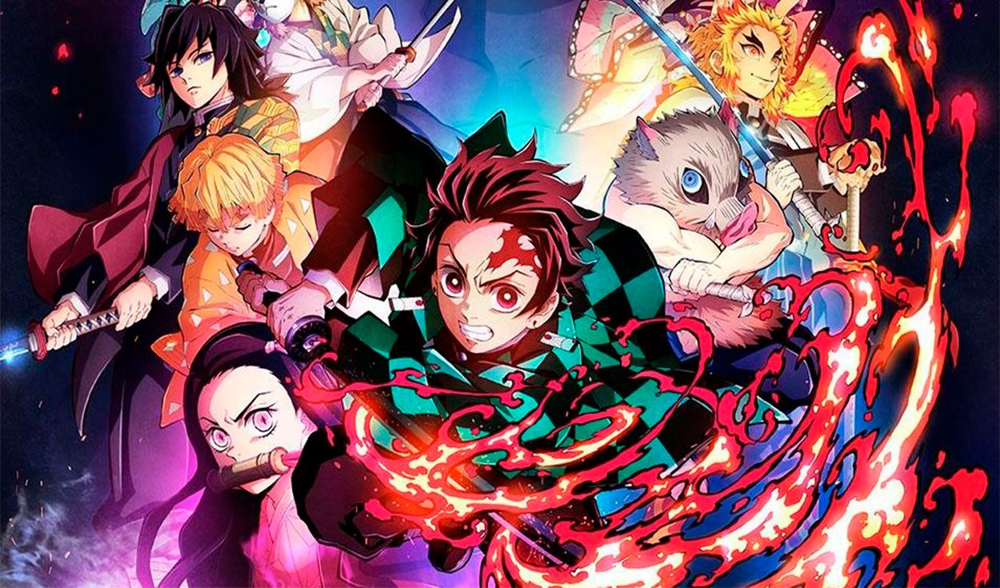
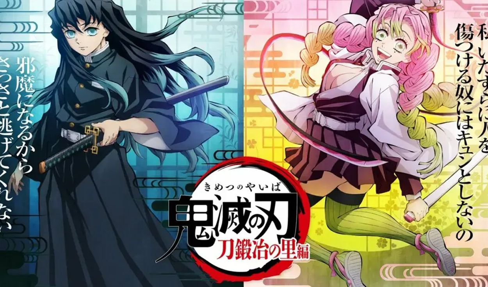

“Kimetsu no Yaiba”: ¿qué veremos en la tercera temporada del anime?
Como era de esperarse, Tanjiro y sus amigos lograron sobrevivir a la última batalla del arco del Distrito del Entretenimiento,
pero él no tendrá mucho tiempo para descansar.
El fenómeno que es “Kimetsu no Yaiba” hoy en día gracias a la notable popularidad que maneja la franquicia siempre dará de qué hablar.
En esta ocasión, corresponde darle una mirada a lo que se viene. Hace unos días, se reveló el PV de “Kimetsu no Yaiba: Katanakaji no Sato-hen”,
la tercera temporada del anime. Gracias a las adaptaciones anteriores de Ufotable y al manga, es posible especular sobre qué esperar de esta nueva entrega.
Alerta de spoilers.
¿Qué arco cubrirá la nueva temporada de “Kimetsu no Yaiba”?
“Kimetsu no Yaiba: Katanakaji no Sato-hen” se traduce como el arco de la Aldea del Herrero, el cual comienza oficialmente en el capítulo 100 del manga, “¡Ve a la aldea!”.
La temporada anterior, “Kimetsu no Yaiba: Yuukaku-hen”, llegó a cubrir hasta el capítulo 97, por lo cual lo que sigue debería comenzar en aquel punto. Recordemos que vimos a Akaza,
la tercera luna creciente que asesinó a Rengoku, ser convocado por Muzan tras la derrota de Gyutaro.
El arco de la Aldea del Herrero comprende desde el capítulo 100 hasta el 127 del manga. De acuerdo a lo visto con las últimas dos adaptaciones al anime, es muy probable que “Kimetsu no Yaiba:
Katanakaji no Sato-hen” se concentre estrictamente en lo que dura el arco en la obra original.
17 Abr 2022 | 17:33 h
DEMON SLAYER: THE HINOKAMI CHRONICLES CONFIRMA EL PESO QUE TENDRÁ PARA NINTENDO SWITCH
La desarrolladora a cargo del título inspirado en el anime también anunció que agregarán un nuevo DLC de pago.

Demon Slayer: The Hinokami Chronicles fue lanzado el año pasado para consolas PlayStation, Xbox y PC, y desde entonces es un éxito rotundo para los fans del anime. Para buena fortuna de los usuarios de Nintendo Switch, los desarrolladores a cargo confirmaron una versión para la plataforma, y ahora se conoce el espacio que se requiere para su descarga.
Recientemente se publicó el trailer de la nueva temporada de Demon Slayer, y los aficionados de la saga están emocionados. Pese a ello, todavía queda un tiempo para que se pueda disfrutar de los nuevos episodios.
La buena noticia que llega es que, además de las versiones que están disponibles del juego basado en el anime, la Nintendo Switch tendrá su entrega para que toda la comunidad pueda entretenerse, mientras esperan el arco de La Aldea del Herrero.
Si te encuentras interesado en la versión para la consola híbrida, debes saber que necesitarás aproximadamente 8.7 GB de espacio para su descarga, según la misma eShop.
Por otro lado, el título de Demon Slayer recibirá un nuevo DLC de pago con más personajes para su modo Versus, contenido que estará habilitado para todas sus versiones.
Demon Slayer: The Hinokami Chronicles está disponible en PlayStation 4 y 5, Xbox Series X/S, Xbox One y PC a través de Steam, y llegará a Switch el 10 de junio.
30 Feb 2022 | 16:46 h
Kimetsu no Yaiba, temporada 3: estreno, qué pasará y qué arco se adaptará
El anime se ha ganado la popularidad de los fans en poco tiempo. Entérate todo lo que se sabe sobre su próxima entrega que promete ser una de las mejores.

Este domingo 13 de febrero se dio fin a uno de los animes más populares de 2022, se trata de Kimetsu no Yaiba: yuukaku-hen. Ahora, para la alegría de los fans, el estudio Ufotable, productora encargada de la realización del anime, ha confirmado que el shonen continuará con una tercera temporada que seguirá adaptando el manga creado por Koyoharu Gotouge.
Pese a que todavía no hay una fecha de estreno estimada, los seguidores se preguntan qué pasará en la nueva saga de Demon Slayer.
¿Qué veremos en Kimetsu no Yaiba, temporada 3?
Según el adelanto compartido en redes sociales, la tercera temporada de Kimetsu no Yaiba adaptará el arco de la Aldea del Herrero, en el que finalmente se conocerá acerca del pasado de Muichiro Tokito, el pilar de la niebla, quien se ha caracterizado por ser uno de los cazadores de demonios más callados y tranquilos.
Asimismo, se sabe que el anime explorará cómo fue la vida de Mitsuri Kanroji, el pilar del amor. Esta joven cazadora, al contrario de Tokito, es muy carismática y extrovertida, por lo que se ha ganado el cariño del fandom.
25 Feb 2022 | 16:46 h
KIMETSU NO YAIBA: CONOCE MÁS SOBRE EL ANIME DE CAZADORES DE DEMONIOS
Kimetsu no yaiba es el anime de demonios y cazadores que está rompiéndola en todo el mundo.
Kimetsu no yaiba es el anime que está causando furor en todo el mundo no solo por su trama sino también por la gran calidad de animación con la que cuenta.
Kimetsu no yaiba sigue las aventuras de Tanjirō Kamado, un adolescente cuya familia fue cruelmente asesinada por un Demonio, el cual convirtió a su hermana Nezuko en una de estas criaturas, obligando a Tanjirō a emprender un viaje para cazar a estos seres y, de paso, ayudar a su hermana a recuperar su humanidad. En el camino, se les unirán Zenitsu e Inosuke, quienes los acompañarán en su búsqueda.